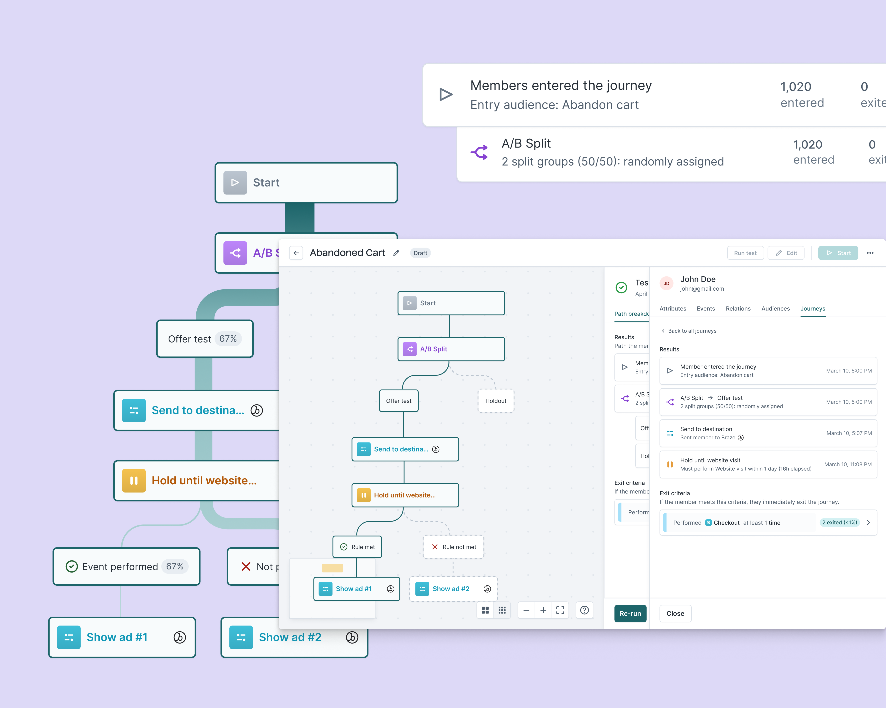
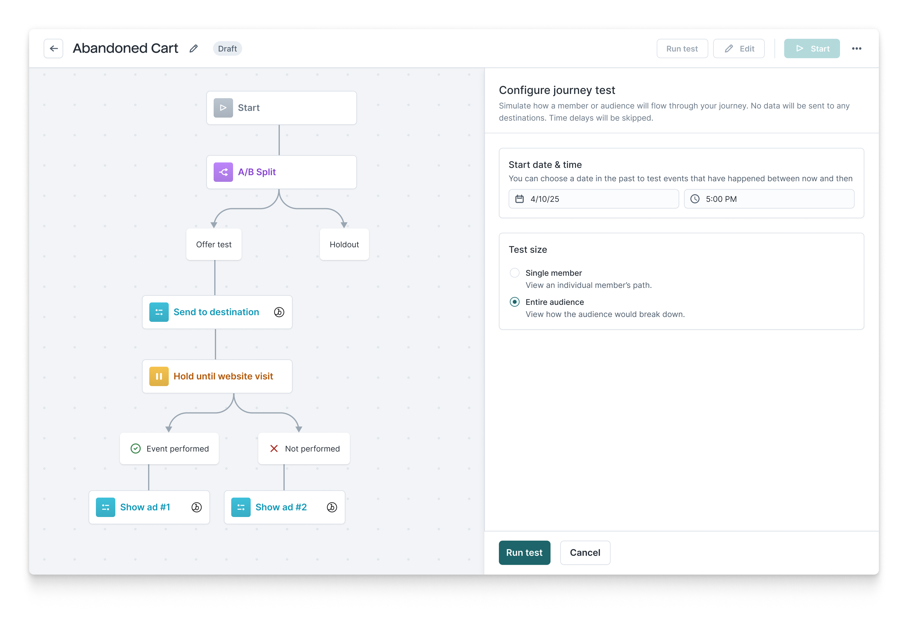
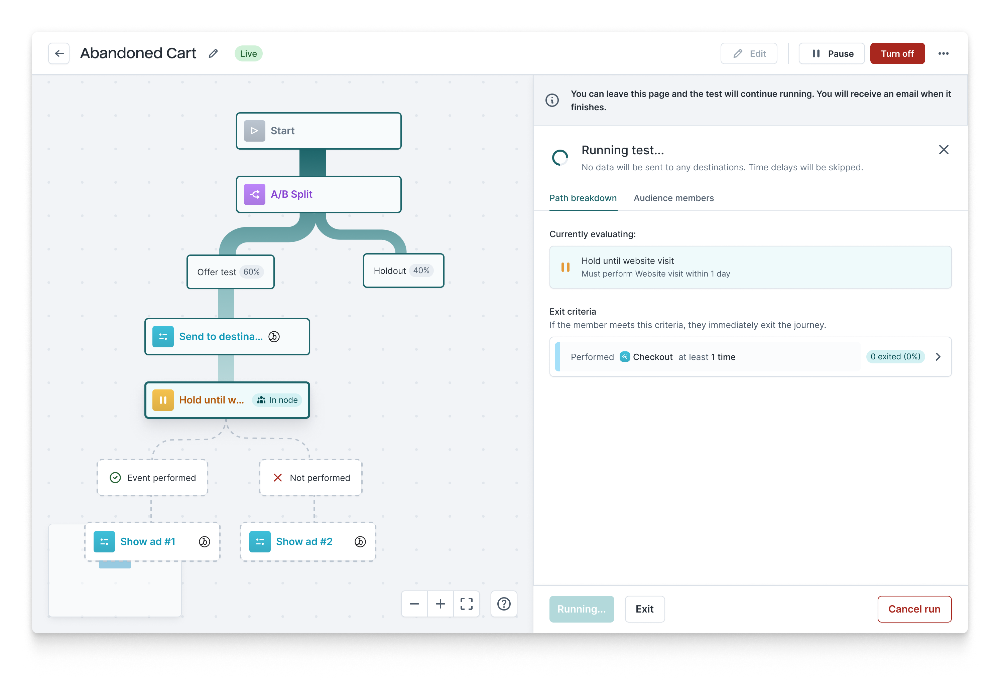
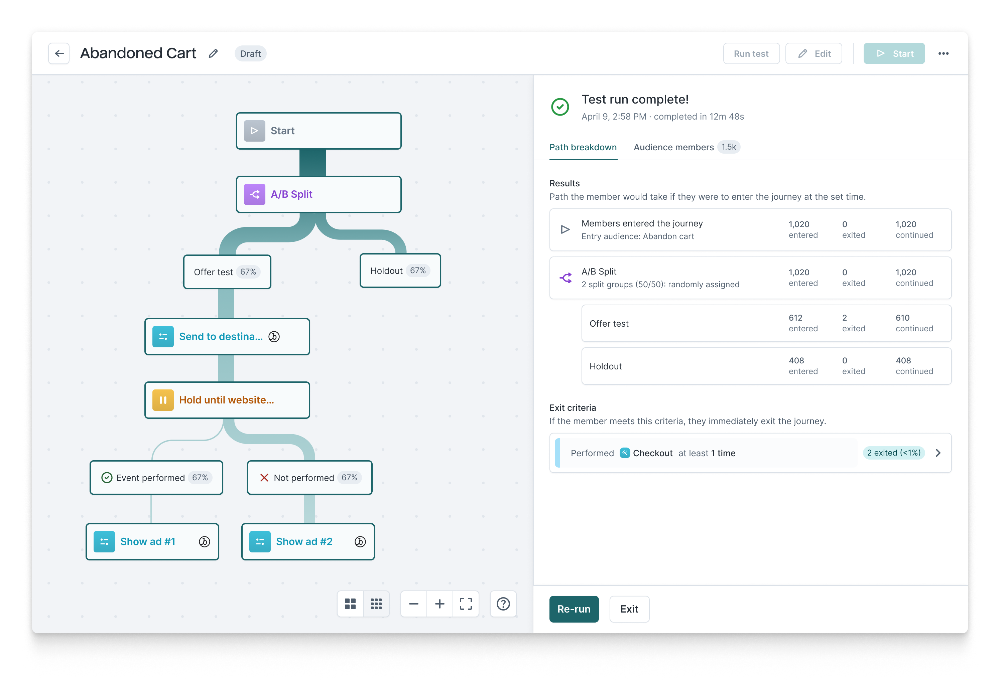
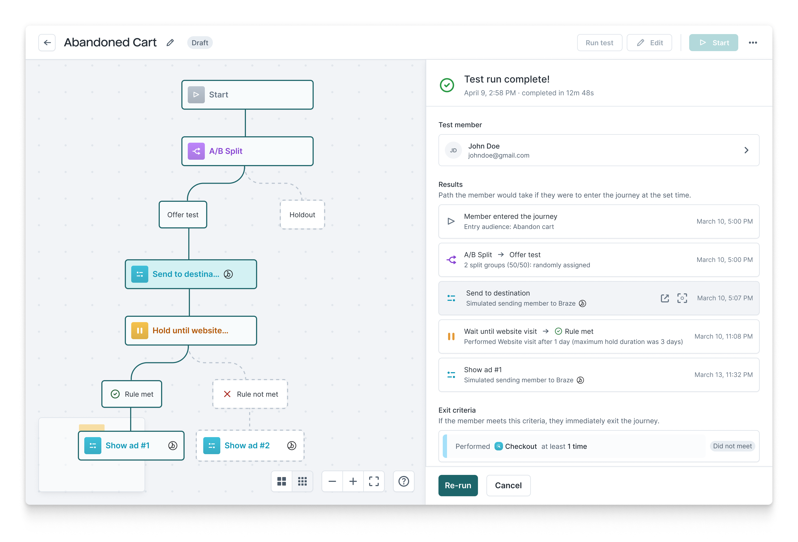

<!DOCTYPE html>
<html lang="en">

<head>
	<title>Emily Porat | Journey simulation</title>
	<link rel="stylesheet" type="text/css" href="styles/global.css">
	<link rel="stylesheet" type="text/css" href="styles/global-mobile.css">
	<link rel="stylesheet" type="text/css" href="styles/nav.css">
	<link rel="stylesheet" type="text/css" href="styles/projects.css">
	<script src="https://ajax.googleapis.com/ajax/libs/jquery/1.9.1/jquery.min.js"></script>
	<link rel="icon" type="image/x-icon" href="pics/favicon.svg"/>
	<!-- Icons -->
	<script defer src="https://use.fontawesome.com/releases/v5.13.0/js/all.js"></script>
	<script defer src="https://use.fontawesome.com/releases/v5.13.0/js/v4-shims.js"></script>
	<!-- Global site tag (gtag.js) - Google Analytics -->
	<script async src="https://www.googletagmanager.com/gtag/js?id=UA-119412150-1"></script>
	<script>
		window.dataLayer = window.dataLayer || [];
		function gtag(){dataLayer.push(arguments);}
		gtag('js', new Date());

		gtag('config', 'UA-119412150-1');

      // load other reused files
      $(function() {
      	$('#nav').load('https://emilyporat.com/nav.html');
      	$('#footer').load('https://emilyporat.com/footer.html');
      });
  </script>

    <script type="text/javascript">
    !function(){var e=window.htevents=window.htevents||[];if(!e.initialize)if(e.invoked)window.console&&console.error&&console.error("Hightouch snippet included twice.");else{e.invoked=!0,e.methods=["trackSubmit","trackClick","trackLink","trackForm","pageview","identify","reset","group","track","ready","alias","debug","page","once","off","on","addSourceMiddleware","addIntegrationMiddleware","setAnonymousId","addDestinationMiddleware"],e.factory=function(t){return function(){var n=Array.prototype.slice.call(arguments);return n.unshift(t),e.push(n),e}};for(var t=0;t<e.methods.length;t++){var n=e.methods[t];e[n]=e.factory(n)}e.load=function(t,n){var o=document.createElement("script");o.type="text/javascript",o.async=!0,o.src="https://cdn.hightouch-events.com/browser/release/v1-latest/events.min.js";var r=document.getElementsByTagName("script")[0];r.parentNode.insertBefore(o,r),e._loadOptions=n,e._writeKey=t},e.SNIPPET_VERSION="0.0.1",
    e.load('52563112fa7908fd58cfdf62691565c30da3674950b876658e4f2df5791f34f9',{apiHost:'us-east-1.hightouch-events.com'}),
    e.page()}}();
    </script>
</head>

</html>
<body class="preload">
	<meta name="viewport" content="width=device-width">
	<div id="nav"></div>
	<div id="arrow-up" onclick="slideUp()"><i class="fa fa-angle-up"></i></div>

	<div class="full-width" style="background-color: var(--lightpurple)">
		<div class="title-wrapper animate-reveal animate-first">
			<div class="title">
				<div>
					<h4>Hightouch • 2025</h4>
					<h1>Journey simulation</h1>
					<h3>Sped up testing workflows for marketers building complex multi-step campaings in Hightouch's Journey builder.</h3>
				</div>
			</div>
		</div> 

		
	</div>


	<div class="panel">
		<div class="body right">
			<div class="context-summary">

				<h2>Overview</h2>

				<p class="p-XL">
					I led research and design for a new journeys feature that allows customers to simulate a journey run safely with test data before going live.
				</p>
				<p><a href="#final-design">Jump to final designs →</a></p>

				<div class="space"></div>

				<div class="context-specifics">
					<div class="context-description">
						<h4>Role</h4>
						<p>Design Lead</p>
					</div>

					<div class="context-description">
						<h4>Duration</h4>
						<p>2 months</p>
					</div>

					<div class="context-description">
						<h4>Released</h4>
						<p>May '25</p>
					</div>
					
					<div class="context-description">
						<h4>Team</h4>
						<p>Me, PM, 2 engineers</p>
					</div> 
				</div>

				
				<div class="space"></div>

				<h3>Background</h3>
				<p>Hightouch's <a target="_blank" href="https://hightouch.com/docs/customer-studio/journeys">Customer Studio</a> journey builder is a drag-and-drop interface that allows marketers to build automated workflows to drive marketing campaigns.</p>

				<div class="space"></div>


				<h3>Problem</h3>
				<p>In order to feel confident launching a journey, most users create a set of test users and fully run their journey to make sure nothing goes wrong. While effective, this method is time consuming.
				</p>

				<div class="space"></div>

				<h3>Solution</h3>
				<p>We introduced a native simulation feature that allows users to pick a test user or entire audience and simulate a journey run in a matter of minutes, not weeks.
				</p>

				<div class="space"></div>

				<h3>Outcome</h3>
				<p>Journey simulation sped up user workflows and improved demo-ability of the product.</p>
				
				<div class="space"></div>

				<div class="highlight-box" style="background-color: var(--lightpurple)">
					<h3>Contribution summary</h3>
					<div class="space"></div>
					<div class="box-1">
						<h4>I owned:</h4>
						<ul>
							<li>User research</li>
							<li>Low-to-hi fidelity UX/UI design</li>
							<li>Concept & usability testing</li>
							<li>Design system contributions</li>
						</ul>
					</div>
					<div class="box-2">
						<h4>Co-owned with PM</h4>
						<ul>
							<li>Scoping & requirements</li>
							<li>Stakeholder management</li>
							<li>Feedback collection & priortization</li>
							<li>Beta testing & release</li>
						</ul>
					</div>
				</div>

				<div class="space"></div>
				<div class="space"></div>


				<div id="final-design" class="full-width-mid-page">

					<div class="panel dark" style="background-color: var(--lightgray)">
						<h3 style="color: var(--darkgray); margin-top: 7%">Final designs - full flow</h3>
						<div class="img-panel-wrapper"> 
							
							<p class="text-in-panel-right">Configure the simulation run - users can choose between selecting an individual or running an entire audience.</p>
						</div>

						<div class="img-panel-wrapper"> 
							
							<p class="text-in-panel-right">Run the simulation - this could take a few hours if the test group is large, so users can leave the page and it will continue running.</p>
						</div>

						<div class="img-panel-wrapper"> 
							
							<p class="text-in-panel-right">View the test results for the full audience - see how it would break down</p>
						</div>


						<div class="img-panel-wrapper"> 
							
							<p class="text-in-panel-right">View the test results for an individual audience member in that audience</p>
						</div>

						<div class="space"></div>
						<div class="space"></div>

					</div>
				</div>

		</div>
	</div>


	</div>
	  	
  	<div id="footer"></div>
  	</meta>
  </body>

  <script src="js/general.js"></script>

</html>